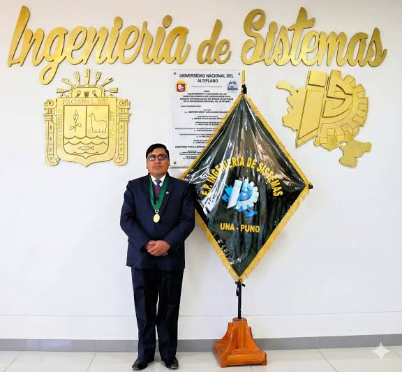

Congreso en Ingeniería de Sistemas
El COINSI (Congreso Internacional de Ingeniería de Sistemas) es un evento académico organizado por la Escuela Profesional de Ingeniería de Sistemas de la Universidad Nacional del Altiplano de Puno (UNA Puno).
Nosotros
Se uso StringTokenizer que cumple la función de separar los datos, mientras que nextToken() se parece a la lectura individual de cada valor con cin >>. En Java, ambos se combinan con BufferedReader para leer la entrada.Se uso StringTokenizer que cumple la función de separar los datos, mientras que nextToken() se parece a la lectura individual de cada valor con cin >>. En Java, ambos se combinan con BufferedReader para leer la entrada.
Fundadores

Elmer Coyla Idme
Co-fundador · Investigador
Investigador en los National Institutes of Health, enfocado en IA, ciencia de datos y NLP. Ponente en TEDxUNMSM.
Guina Guadalupe Sotomayor Alzamora
Co-fundador · Docente
Co-fundador de SIMBig (2014) y LASAI (2025). Anteriormente en Stanford University y University of Florida.
Feder
Co-fundador · Investigador
Especialista en aprendizaje automático y bases de conocimiento para salud y biomedicina. Formación en Francia y el Reino Unido.
Historia
Se uso StringTokenizer que cumple la función de separar los datos, mientras que nextToken() se parece a la lectura individual de cada valor con cin >>. En Java, ambos se combinan con BufferedReader para leer la entrada.Se uso StringTokenizer que cumple la función de separar los datos, mientras que nextToken() se parece a la lectura individual de cada valor con cin >>. En Java, ambos se combinan con BufferedReader para leer la entrada.
Contáctenos
¿Tienes alguna pregunta o deseas participar? Escríbenos.